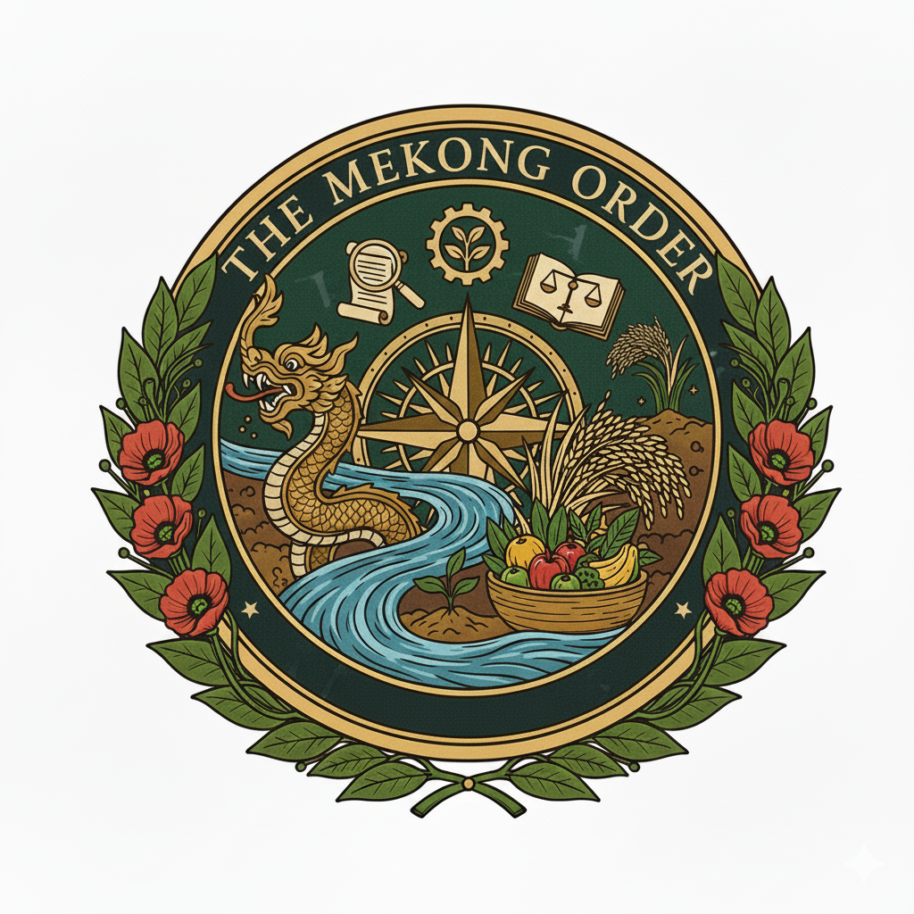

Where land, liberty & discovery flow
We champion equitable land stewardship, personal liberty and exploration across Southeast Asia.
From forgotten civilizations to uncharted paths, join us as we traverse the Mekong region’s diverse landscapes and cultures.
Celebrate gastronomy rooted in the land. Our gatherings honour slow food traditions and regional delicacies.
Gain access to lectures, research and dialogues that illuminate Southeast Asia’s history and future.
The Mekong Order is an invitation‑only club inspired by the venerable Royal Asiatic Society, which since 1823 has fostered scholarly exploration of Asian history, languages and cultures. Our crest blends a diversity of symbols to reflect the Order’s purpose: the naga serpent of Lao and Khmer legend evokes the Mekong River, a compass and star signal our thirst for exploration, a pair of scales embodies justice and fair land stewardship, and a gear hints at productive enterprise. A basket brimming with fruits and a sheaf of rice celebrate Southeast Asia’s agricultural abundance and acknowledge the Slow Food movement’s appreciation of mindful, convivial eating. The green and gold palette echoes the wakaba shield used by Georgists as an emblem of land value taxation and shared prosperity. Surrounded by floral laurels reminiscent of Lao royal standards and local flora, the emblem encapsulates our commitment to heritage and liberty. The Order unites explorers, economists, culinary artisans, anthropologists and free‑thinkers to share ideas and plan expeditions across Southeast Asia.
The Order welcomes individuals who demonstrate leadership in land economics, libertarian thought, exploration, gastronomy or anthropology. Membership is strictly by invitation and referral. To be considered, please provide a letter of interest describing your accomplishments and how you align with our values.
Submit an EnquiryWe organise intimate lectures, expeditions and dinners that explore the cultural and natural heritage of Southeast Asia. Recent gatherings have included:
For enquiries, partnerships or membership recommendations, please write to us at info@mekongorder.org. We encourage messages that reflect the thoughtfulness and discretion befitting an invitation‑only society.